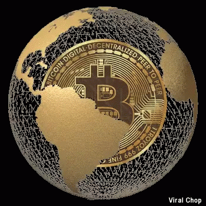

A MUDANÇA PELO BITCOIN

O bitcoin surgiu no ano de 2008, e desde então seu surgimento sempre foi uma incógnita. Mas não estamos aqui para discutir isto, e sim as mudanças que ele está implicando nas mais diversas áreas da sociedade. Uma das questões mais descultidas é sobre o fato dele não poder (caso bem armazenado) de ser localizado, o que impede as nações de taxar a riqueza de quem o tem. Segundo Nassim Taleb: "O Bitcoin é o começo de algo grande: uma moeda sem governo, algo necessário e imperativo."
O Governo de El Savador, por exemplo, via-se em uma cangora se tratando da economia do país, uma das ações do presidente eleito foi aderir a cripto como uma forma de ter uma maior dinâmica econômica em seu país. Enquanto uns estão caminhando rumo à inovação e a aceitação da moeda, outros países estão em um caminho contrário, A Nigéria anunciou na última quarta-feira, 21, que pretende banir o acesso dos cidadãos do país aos sites das principais corretoras de criptomoedas do mercado, incluindo a Binance, a Coinbase e a Kraken. Segundo as autoridades do país, a alta demanda pelas criptos está causando a desvalorização da moeda local. Outros países africanos como, África do Sul e Botsuana seguem o caminho da regulamentação do ativo. Por outro lado, há países que proíbem ou restringem severamente as atividades relacionadas ao bitcoin, como Bolívia, Equador e Venezuela. Esses países alegam que as criptomoedas representam uma ameaça à soberania nacional, à estabilidade econômica e à segurança dos consumidores. Alguns deles, como a Venezuela, também tentam criar suas próprias moedas virtuais, controladas pelo governo